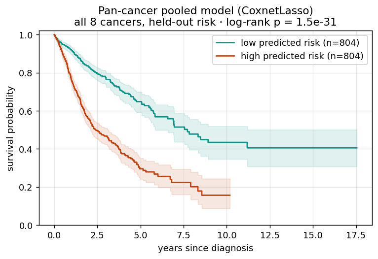

What the embeddings could predict
Tables are sortable: click any column header. Charts are hoverable and recolor with the theme. Figures open full-size on click.
Classification · TCGA-CHOL
Targets explored
| Target | N | Class split | Best AUC | Verdict |
|---|---|---|---|---|
| Tumor vs normal | 59 | 39 : 20 | 1.000 | saturated · not useful |
| Tumor grade (low vs high) | 26 | 13 : 13 | 0.799 | real signal · p = 0.005 |
| BAP1 mutation | 36 | 7 : 29 | 0.639 | too imbalanced |
| PBRM1 mutation | 36 | 8 : 28 | 0.380 | below chance |
Top classifiers for tumor grade
AUC under leave-one-out CV. KNN-5 (highlighted) leads at 0.80.
| Model | AUC | Accuracy | F1 |
|---|---|---|---|
| KNN-5 | 0.799 | 0.808 | 0.815 |
| LogReg (L1) | 0.734 | 0.692 | 0.692 |
| LinearSVC | 0.722 | 0.692 | 0.667 |
| Bagging (LR) | 0.716 | 0.731 | 0.741 |
| LogReg (L2) | 0.704 | 0.615 | 0.643 |
| SGD (Huber) | 0.692 | 0.692 | 0.692 |
| KNN-3 | 0.686 | 0.769 | 0.769 |
| GaussianNB | 0.686 | 0.692 | 0.692 |
Permutation test (grade · KNN-5 · LOO)

Survival cohort (UNI2)
The expanded survival cohort spans 8 TCGA cancer projects with 1 608 patients and 557 events. Each row below is one cancer; survival LOPO + bootstrap CI is run separately per cancer so the model trained on one cancer never predicts another.
| Cancer | Patients | Events | Censored | Power for C-index |
|---|---|---|---|---|
| TCGA-COAD | 369 | 90 | 279 | well-powered |
| TCGA-STAD | 343 | 143 | 200 | well-powered |
| TCGA-LIHC | 300 | 128 | 172 | well-powered |
| TCGA-CESC | 242 | 65 | 177 | well-powered |
| TCGA-ESCA | 135 | 66 | 69 | well-powered |
| TCGA-READ | 133 | 27 | 106 | adequate · wide CI |
| TCGA-ACC | 50 | 19 | 31 | strong signal |
| TCGA-CHOL | 36 | 19 | 17 | underpowered |
Per-cancer survival performance
Each row pairs the clinical-only baseline (Cox on age + gender) against the strongest WSI-informed model on that cancer. C-index = pooled LOPO over all patients; CI = 1 000-iter bootstrap on the (event, time, risk) triples; HR = per-SD lifelines Cox on the standardized risk score; log-rank p = median split of predicted risk.
Age + sex baseline vs best WSI model, per cancer (C-index). Bars above the others show where imaging adds value; READ is the one cancer where WSI underperforms its clinical baseline. Chance level = 0.50.
| Cancer | Age + sex C | Best WSI model | C-index [95 % CI] | HR / SD | log-rank p | Verdict |
|---|---|---|---|---|---|---|
| TCGA-ACC | 0.507 | Cox_WSI_plus_Clin | 0.843 [0.803, 0.885] | 6.88 | < 1e-30 | strong WSI signal |
| TCGA-LIHC | 0.478 | Cox_WSI_plus_Clin | 0.688 [0.635, 0.740] | 1.95 | < 1e-30 | strong WSI signal |
| TCGA-CESC | 0.562 | CoxnetLasso | 0.700 [0.630, 0.770] | 2.13 | 3.1e-05 | moderate signal |
| TCGA-COAD | 0.552 | CoxnetLasso | 0.604 [0.538, 0.673] | 1.42 | 2.6e-02 | small but real |
| TCGA-STAD | 0.526 | CoxnetLasso | 0.597 [0.548, 0.643] | 1.40 | 1.5e-02 | small but real |
| TCGA-ESCA | 0.609 | CoxnetLasso | 0.594 [0.516, 0.668] | 1.26 | 1.1e-01 | no WSI gain |
| TCGA-READ | 0.727 | CoxnetLasso | 0.443 [0.321, 0.568] | 0.88 | 7.8e-01 | WSI anti-predictive |
| TCGA-CHOL | 0.454 | CoxnetLasso | 0.548 [0.421, 0.687] | 1.05 | 3.5e-01 | underpowered · ns |
- ACC and LIHC are the clear wins. WSI features push C-index from near-chance (0.51 / 0.48) to 0.84 / 0.69 with per-SD hazard ratios of 6.9 and 1.95, and tight bootstrap CIs that don't touch 0.5.
- CESC, COAD, STAD show small but real signal. All three have log-rank p < 0.05 on the median split, with WSI gains of 0.04 – 0.14 over the age + sex baseline.
- READ is a cautionary tale. Age + sex hits C = 0.73 (driven by age), and WSI models drop to 0.44, actively anti-predictive. The WSI signal here is absent or overwhelmed by the clinical signal.
- ESCA, CHOL, and the smaller cohorts produce wide CIs that include 0.5. The honest answer is "we can't tell" rather than the misleading tight-but-wrong numbers naive 5-fold CV would have given.
Pan-cancer pooled model
What if, instead of a separate model per cancer, we train one model across all 1,608 patients from all 8 cancers at once?
A single pooled model is appealing (more data, one model to ship), but it comes with a catch worth stating plainly.
- Overall C-index: concordance across all patients pooled. Useful, but optimistic: it partly rewards telling cancers apart.
- Stratified C-index: concordance measured only within each cancer, then pair-weighted across them. This is the honest within-cancer signal.
| Model | Overall C [95% CI] | Stratified C | HR / SD | log-rank p |
|---|---|---|---|---|
| Age + sex (clinical floor) | 0.576 [0.551, 0.601] | 0.544 | 1.31 | < 1e-8 |
| WSI · Coxnet Lasso | 0.665 [0.640, 0.690] | 0.605 | 1.82 | < 1e-30 |
| WSI + clinical (combined) | 0.665 [0.640, 0.690] | 0.605 | 1.82 | < 1e-30 |
Pooled C-index, clinical baseline vs WSI. For both, the overall bar sits above the stratified bar; that gap is the between-cancer effect. WSI beats the clinical floor on both measures, so the within-cancer signal is real, not just cancer-type detection.

Kaplan–Meier stratification (top 4 WSI signals)
Each panel takes the held-out LOPO risk score from the best WSI model on that cancer, median-splits patients into high vs low risk, and plots survival with 95 % CI bands. The log-rank p (high vs low) tests whether the predicted risk groups have different survival distributions.


Survival output schema
For each (cancer, model) pair, results/survival_loo/all_results.csv records:
Output columns
cancer_type, model, feature_mode, clinical_covariates_used, n_patients, n_slides, n_events, n_valid, c_index_pooled, ci_low, ci_high, # pooled LOPO + bootstrap 95% CI hr, hr_ci_low, hr_ci_high, hr_pvalue, # per-SD HR from lifelines Cox logrank_chi2, logrank_pvalue, # median-split log-rank time_sec
Per-slide held-out risk scores are also saved (risk_scores.csv) for
downstream Kaplan–Meier plotting.
tumor_stage is NaN throughout
CLINICAL_FULL.parquet, so the clinical baseline is age + gender only. A
stronger baseline (with stage) would set a higher bar for the WSI models; the current
comparison is therefore conservative: anything WSI gains over Cox_AgeSex is a
lower bound on its true marginal value.